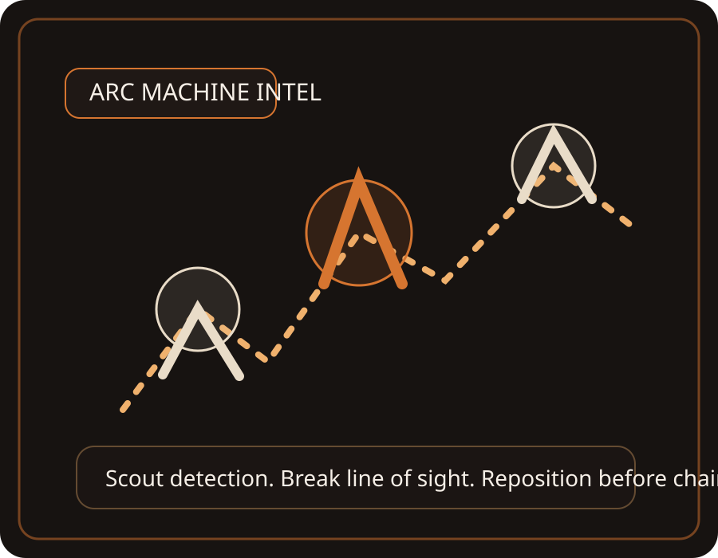

Search Results
Jump straight to the part of the guide you need.
Update Center
Track what is officially confirmed, what to prepare before the next content drop, and how this app should evolve after each release.
Release Timeline
Use this to follow ARC Raiders' current update rhythm and jump into the changes that matter most.
ARC Raiders Learning App
Know what to run, what to learn, and what changed.
Use this guide like a raid console: check the latest update, continue your learning path, and jump straight into quests, materials, or machine intel without hunting through the app.
Go straight into the New Raider path if you still feel overwhelmed by the game loop.
Need progress Finish quests fasterUse the quest board when you want to turn raids into reliable progression instead of random looting.
Stuck crafting Find materialsJump into material families and route advice when your workshop or stash is blocking progress.
Patch day Check what changedOpen the Update Center first when Embark ships new content so you know what advice may have shifted.
First Raid Briefing
These are the habits that keep a new Raider alive long enough to learn.
Fix the Most Common Problems
These are the biggest pain points players keep hitting, with direct paths to the part of the guide that helps most.
Lessons
Tap a lesson for the practical breakdown, checks, and field notes.
Quest Operations
Use this board to understand how ARC Raiders quest systems work and how to finish them efficiently.
Quest Types
Pick a quest type to see the goal, the safest approach, and the common mistake that slows people down.
Crafting Materials Intel
Use this section to understand where material types usually come from so you can route for crafting more intentionally.
Material Families
Pick a material family to see where it tends to appear, what map spaces suit it, and how to farm it safely.
ARC Machine Intel
Learn the job each machine does so you can react faster under pressure.

Raid Prep Checklist
A simple pre-drop checklist for solo or squad play.